Learning Record 08
Transformers in Practice
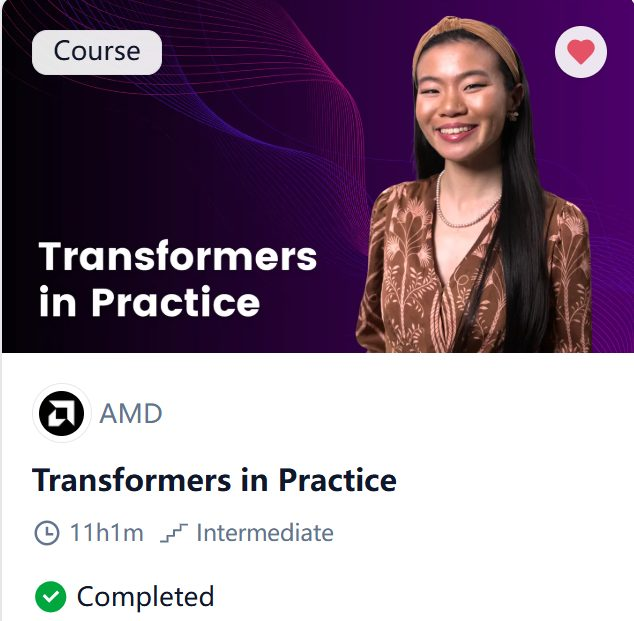
网站：Transformers in Practice - DeepLearning.AI
大概花了三四天（maybe）搞完这门课，收获还是挺多的，从不同视角又了解了很多东西，让我对于这个领域的了解更丰富了，具体课程总结之后再写吧，现在要累死了，我感觉我这学的强度还是太高了，该休息一下了
同时这门课有一些小lab，还是挺有帮助的，问就是建立直觉，因为我真不期待这些有点老的东西还能被原搬不动地用上，但是我觉得了解了这些技术演进脉络对于后续学习更前沿的知识/实践会有帮助（也可以梳理之前的知识），而且我觉得这种认真投入学习的过程中也会培养一些通用的能力
总结
这门课程分为三个章节，
第一章节(Obeserved Behavior)，主要是把LLM当作黑箱，从这一视角建立对于LLM的直觉，核心主线（记住这个对于学习第二章很有帮助，更好把握定位）是LLM的next token pretiction的Autoregressive过程：
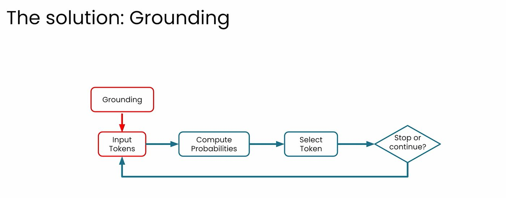
第二章（LLM internals and attention）深入怎么实现的next token pretiction，这里更加底层，从输入token，到transformer层，以及里面的multi attention head等组件，最后到输出probobilitities，这里关于attention机制我原来是几乎根本不了解，而这门课，特别是其中的可视化部分，让我建立了很好的直觉。
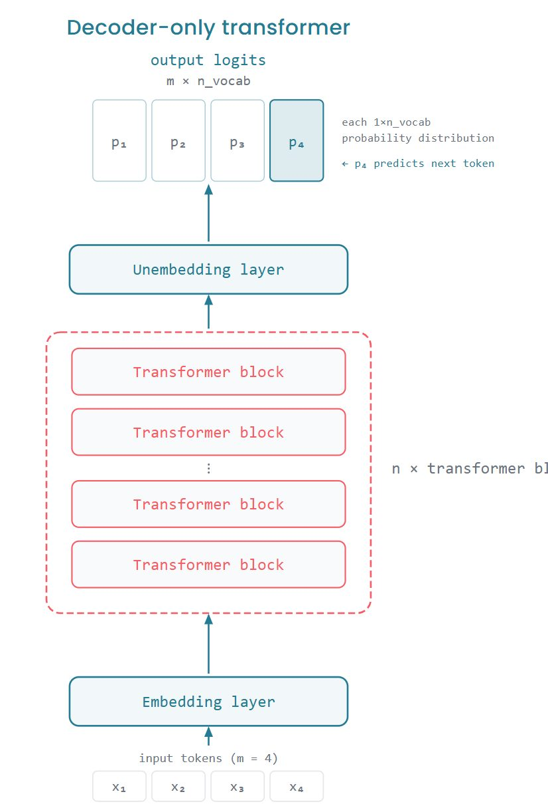
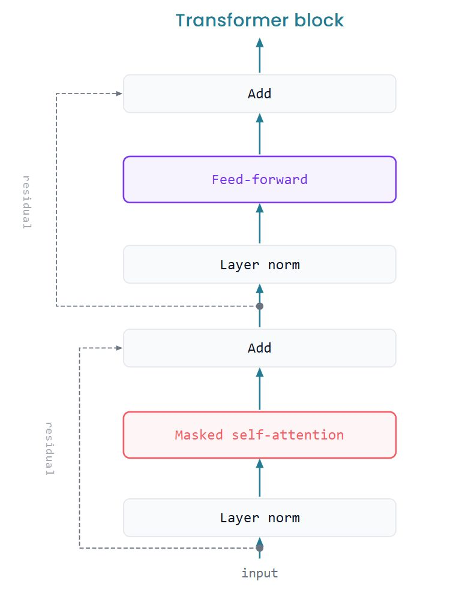
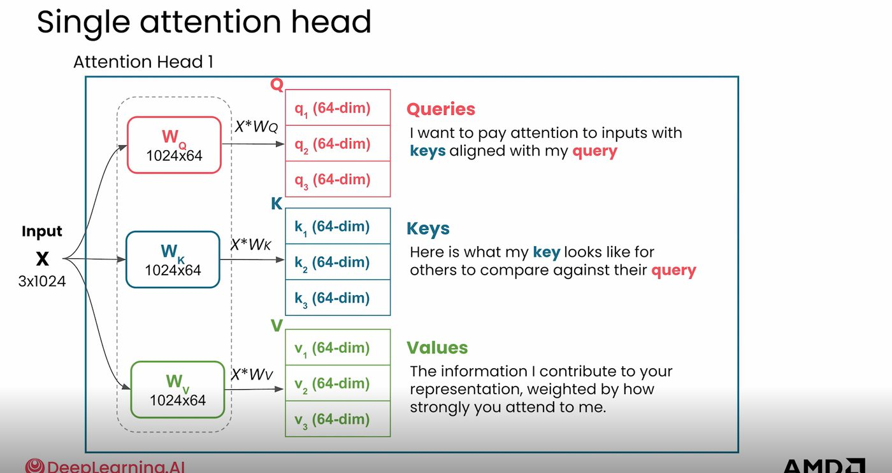
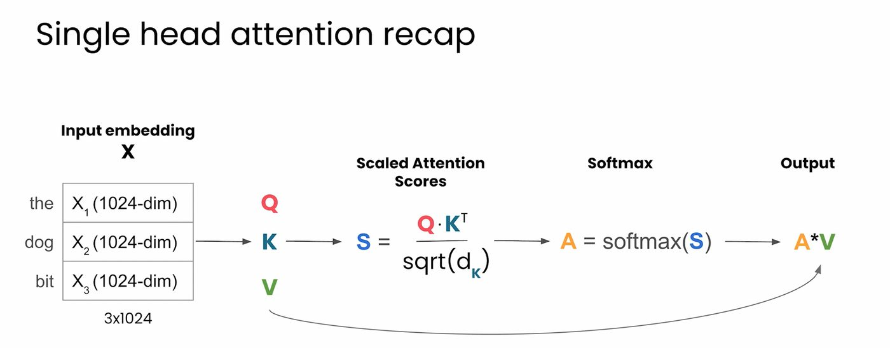
第三章也包含很多有意思的话题：主题是Scaling and Deploying，主要是探讨一些LLM进入生产规模是会遇到的一些问题和方法，
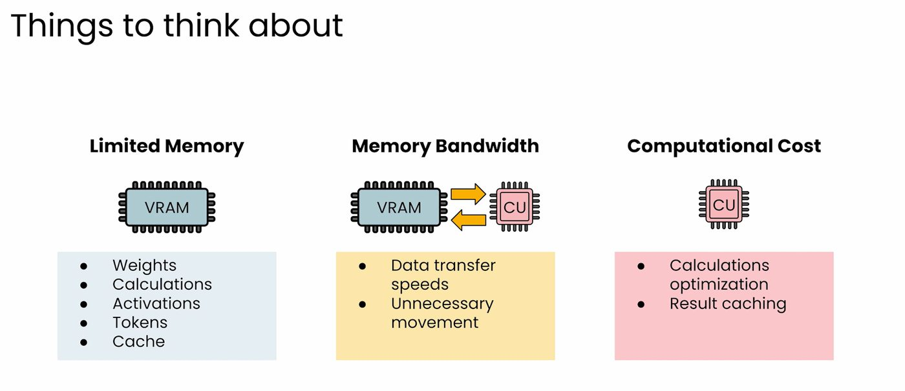
从模型权重内存太大 —> quantization, 以及原来每次都要算Q，K, V三个矩阵太慢，引入KV cash,再把视角聚焦到GPU内部，频繁访存一方面慢，另一方面增加了额外内存开销，引入了flash attention，最后又提出了Speculative decoding，一种无损提速方法，相应的数学也非常美丽
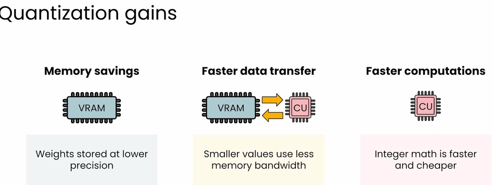
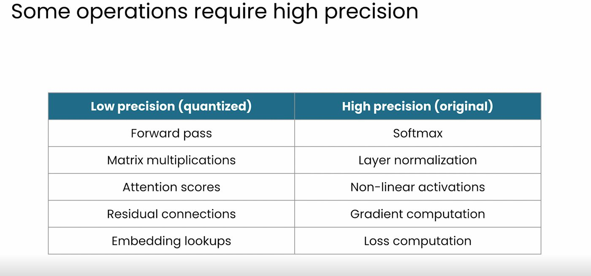
Quantization gains
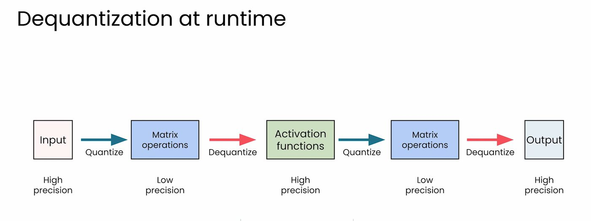
KV cash
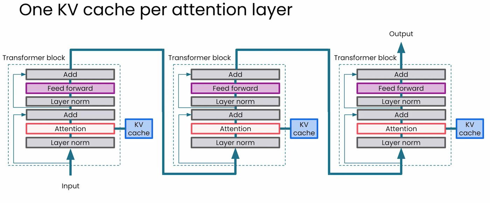
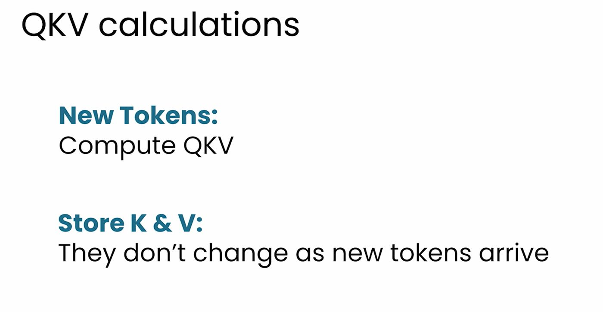
（注：KV cash是在推理阶段/部署阶段使用，而不是训练阶段，因为KV cash要求Q,K,V的权重矩阵不变）
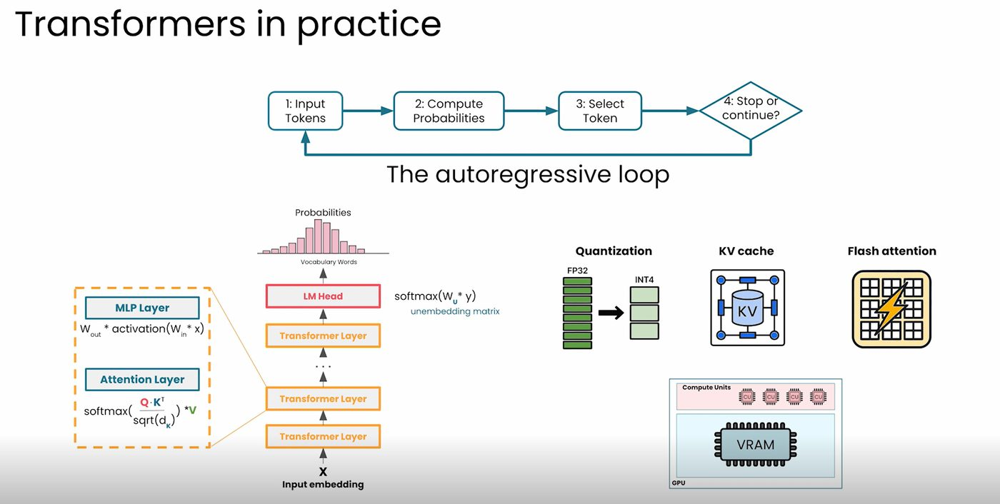
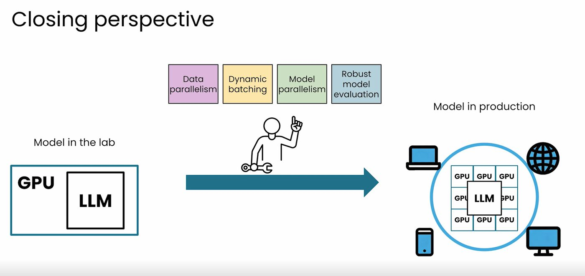
总结
(其实不开pro看这门课收获也很大了，因为pro只是可以做几个lab，但是根据我的体验，都不是精华)
———————————————————————————————————